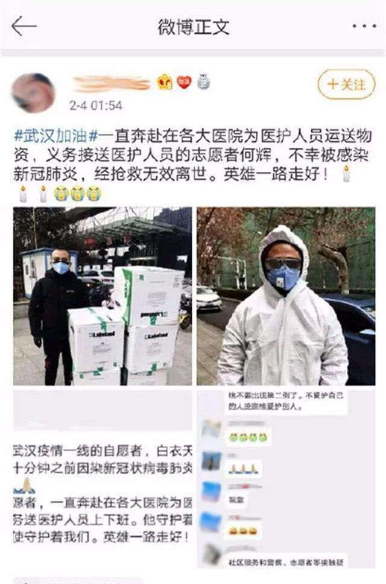
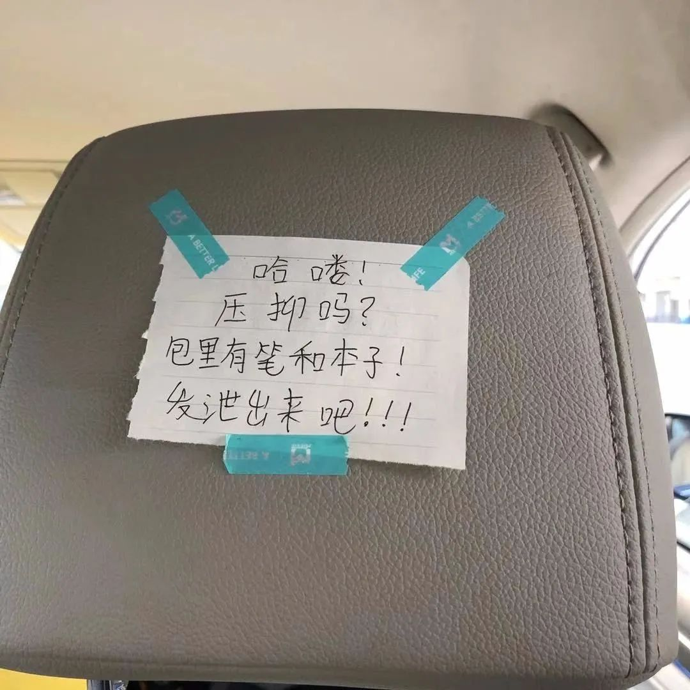
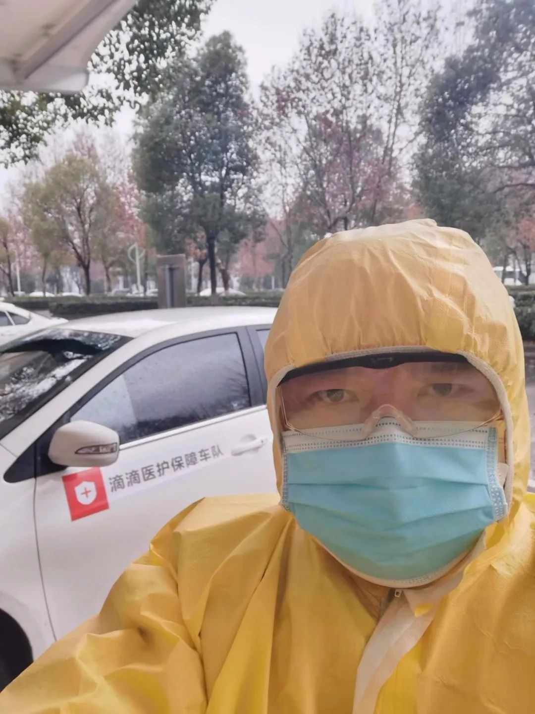

武汉支援医护车队司机自述：初一凌晨两点，我接到了去医院的第一单 | 深网
原文链接 备份链接 作者 | 相欣 编辑 | 康晓 出品｜深网·腾讯小满工作室 欢迎下载腾讯新闻APP，阅读更多优质资讯 编者按：通过湖北各城普通民众的视角和抗疫行动，记录这一段我们永不会忘记的历史。是为抗疫日记系列之二，来自武汉支援医护 …

2月17日的武汉，封城限行的第26天。
胡建斌觉得有些恍惚。
车窗外，夜幕下，路灯闪闪发亮，成串的红灯笼挂满道路两旁，路面没有了往日的车水马龙，许久都看不到一位行人。一辆警务车从对面匆匆驶过，路的尽头，高楼外壁上火红的灯光映衬出四个黄色大字：“武汉加油”。

凌晨6点半出车，到现在刚好12个小时，厚厚的防护服下，衣服早已湿透。连续15个订单让胡建斌来不及吃上一口饭。是的，从早到晚，他没吃一口饭，只是稍微喝了点水。
“现在是战时，战时，你不可能像平常一样，好好地吃个一日三餐！我就是那种一天不吃也能干事的人。”胡建斌是滴滴医疗保障车队的一名志愿者，他所在的车队专门负责接送定点救治医院的医护人员。

胡建斌第一时间响应滴滴征召令，加入医疗保障车队。
1月23日，武汉市内的公共交通停摆，各类平台的叫车业务下线，这个城市被强制按下了暂停键。封城后的一两天，有民间志愿者自发组建过车队接送市民，很快因为安全问题被叫停。
情况异常严峻。医护人员上下班无车可乘，有的人需要骑2个小时的自行车才能赶到单位，有的人甚至只能步行上下班。为了解决“禁车”之难，23日封城当天，滴滴平台开始招募武汉当地的司机志愿者，分别负责社区和医院的“摆渡”工作。

毫不犹豫地，胡建斌第一时间填表加入，并担任一支分队的队长。他们的服务范围包括武汉市15家医院的25个院区，目前已经接送了近万名医护人员。可是200人的医护保障车队仍然显得运力匮乏，志愿者们不得不不分白天黑夜地玩命开车，生物钟完全被打乱，以至于将清晨5点半称为晚上5点半……
在连续一个月的超负荷工作之后，胡建斌依然鸡血满满：有幸参加到一场关乎国家命运，关乎民族存亡，抗击疫情的武汉阻击战中，三生有幸！有全国人民支持，一定要打赢，一定能打赢！
电话那端的胡建斌，让我想起了加缪的那句话：在隆冬，我终于知道自己身上有一个不可战胜的夏天。
口述 | 胡建斌
整理 | 陈 冰

志愿者的路，我帮你继续走下去
4年前，我开始兼职开滴滴，最近一年半开始做专职滴滴司机，平时每天就要开16个小时左右的车，现在是战时状态，肯定要比平常更辛苦些。
晚上还要接凌晨下夜班的医生和护士，所以我一般都是凌晨左右蹲在医院门口，二三点回家睡一会儿，然后6点半起床继续送早班的医生和护士。说真的，我已经有点分不清到底是凌晨还是深夜。
起床以后根本来不及吃早饭，但是防护服、手套、口罩必须穿戴好，再把头天放在84消毒液里浸泡消毒的护目镜戴好，摸黑出门。
车里一直都有刺鼻的消毒水味道，防护服湿闷，口罩也透不过气来，整个人就像坐在蒸笼里，即使什么也不做，也会一直不断地向外冒汗。两个小时，我的衣服就会湿透。但也只能忍上整整一天。
自打实行了禁行令后，私家车就不允许上路了。整个城市空空荡荡的，街上几乎看不到行人和车，时间好像都停止了，周围安静得只能听见雨水敲打车窗的声音。作为一个土生土长的武汉人，我突然觉得从这个春节开始，武汉有点陌生了。那个充满着烟火气的城市，一瞬间，没得了。

从白天到黑夜，胡建斌一路奔波在各大医院之间，接送医护人员
我已经是个年过半百的人了，确实也经历了一些大风大浪。起先在武钢下属的带钢厂上班，1997年，遭遇国企改制，我和老婆都在武钢工作，必须有一个人下岗。我不能让老婆下岗啊，所以就买断工龄走人了。
我去了武汉当时最大的外企丝宝集团当销售。大家都知道的那个感染病毒去世的志愿者何辉，就是我的顶头上司。朝夕相伴的人啊，几天就没了，孤零零地一个人走了，火化的时候旁边没有一个人。
我听到这个消息的时候，感觉像被人打了一闷棍，心情糟到了极点，脑子一片空白，好像什么都做不了了，只能枯坐在车里，发呆。
根本没有什么感同身受，你不会明白的。

网友微博发布的何辉去世消息
那时我才刚刚送完一个医生，把车停在小区的停车场里，接下来我必须赶紧把车开到接头点给队员送防疫物资，还有一个单子要完成，时间很紧张。
但是那种愤怒、懊恼、无力的感觉让我透不过气来。结果一不留神，我在小区花坛的拐角把车撞了。
还好，只是右后轮撞落了花坛的一大块瓷砖，车身被刮花了，不影响行驶。我当时就在心里暗暗对何辉说，医护保障志愿者的路，我一定帮你继续走下去。
我，咋办？
滴滴公司定期给我们发放物资，包括防护服、口罩、一次性手套和消毒液。不过物资一直紧缺。消毒液，防护服尤其缺。滴滴公司的总裁柳青都在微博发帖为我们这些一线司机求助了。我第一轮从滴滴公司拿到7套防护服、第二轮只拿到3套，第三轮2套。我们只能尽可能地节省，现在一套防护服要穿上3天。

胡建斌经常接单的同济医院中法新城院区专门收治重症病人
每天都在接送医务人员，我变得越来越谨慎。每次出车前，我要花上近半小时对全车进行消毒。我们小区有10多个确诊的，我楼下就有一个。也不知道他们住进医院了没有。每天早出晚归，我已经来不及关心周边的人和事，只想着完成订单，一单，再接一单，能多接送一个是一个。
之前，我在地下室停好车，会把护目镜和防护服都脱下去再上楼。现在，我觉得所有人都可能是疑似，什么也不敢脱了，就穿着这么一身鼓鼓囊囊的衣服走回家。进门之前，我会先用消毒液喷洒鞋底，然后用消毒液对一次性防护服进行彻底消毒，第二天我还得继续穿呢。没得办法啊，现在整个房间里都是消毒水的味道。可武汉，哪家不是这样呢？

胡建斌忙的时候，连令人反胃的泡面都没空吃
吃饭？我们医护保障车队没有定点休息，只能在给车充电的间隙，边等着充电，边找热水泡面。哪里有热水，就在哪里吃。车上、小区、医院都吃过。现在，留守在武汉的每个滴滴司机都害怕再看到泡面。不论是哪种口味的，闻到那股味道就反胃。但忙的时候，连吃泡面都是奢侈的。
物资和工作上的难，我觉得都能承受。就是人情世故，难啊，难啊。
大年初四的晚上，住在汉口的表姐打电话给我。他们夫妻俩，六十出头，发热、咳嗽多日，CT显示两人肺部发白。表姐问我能不能用车子送他们去医院，我为难了半天，但还是直接告诉他们，我的车，只能接送医护人员。
没想到，后来又发生了同样的事情。我拒绝了一家四口患病的前同事，还有妻子娘家的亲戚。我老婆说我这样子做，把关系都弄僵了。我连拌嘴的力气都没有了。这是个原则问题啊。我接送的是医护，他们可是要救命的人，万一在我的车上被感染了怎么办？
每天深夜到家，都能看到老婆给我留着的一盏灯。我想，她应该原谅我了吧。
太——难——了……
其实在车上，我一般也不多跟医生护士们聊天。他们都很累了，常常是一上来就瘫坐在后座上。不过拉了那么多医护人员，故事肯定还是有的。
一位小护士在车上跟我说，自己独自照顾6个床位的病人已经吃不消了，现在又被增加了2个床位的工作量，真的是累到崩溃。我说我把车开得慢一点，你可以眯一会儿。
2月6日晚上，我接到了一个12公里外的派单，我到达上车地点仁爱医院时，发现医院已经被隔离，大门上写着大大的“封闭”二字，情况看起来很严重。
一个女的，拿着几个包走了过来，可她不是叫车人，按照滴滴医护叫车系统的规定，为了避免共同乘坐造成交叉感染，禁止同乘或代叫。我就不让她上车。万一她是病人，我这个车就是一个流动带毒车，后面乘坐的医护就有危险。结果她给我出示了自己的护士证，说是同事帮她叫的车。
我心软了，打开所有的车窗，让她上了车。
“我连续工作了三天，刚刚晕倒了。”刚上车，女护士就跟我说，本来她拿着包裹，是为长期作战准备的，没想到刚连轴转了三天，身体就出现状况了。她觉得自己有可能“中招”了。
我当时很着急，告诉她这种情况应该叫救护车，或者自行前往隔离酒店。并且提醒她，在病毒高发区工作，不应该带杂物回家，何况家里还有孩子。
女护士在车上哭得稀里哗啦的，一时间也六神无主了，然后又开始埋怨我……
车内压抑的气氛让我们都有点失控，我告诉自己，冷静，冷静，不要骂娘。
好巧不巧，她的手机又没电了。我赶紧打电话联系她老公，让他做好防护措施出来对接。所幸后来证实只是虚惊一场，女护士没事儿。
还有一位姓曾的医生，在我们接送他上下班之前，靠自己的腿足足走了三天的路。他所在的武汉市第三医院和社区距离7公里，他走得慢，每天要徒步走3个小时。大年初四，曾医生无法坚持下去，只好打电话叫车了。
我们问他，为啥不叫车呢？他说我不好意思麻烦你们，但我实在是走不动了……
这真的是，太——难——了。

滴滴司机以自己的方式默默关心乘车的医护人员，而车的后座上也常常会有医护们留下的礼物——饼干、牛奶、八宝粥或者是一枚珍贵的N95口罩
耐心等待着拐点的到来
我就是典型的武汉人，性子急，心肠热。
2015年，我在武汉一家口罩公司，负责华北地区的销售。天津发生“812滨海新区大爆炸”的时候，我当天晚上就领着同事，送去了40万只口罩。在天津呆了一个星期，就是不停地给需要的人发口罩。

作为接送医护人员的次高危人群，胡建斌非常注重自己和队友的防护
今天的武汉，形势比当初的天津严峻得多。口罩，成了护命的硬通货。一天，一位护士在车上和我闲聊，说在同济医院中法新城院区有司机没有穿防护服、戴护目镜。作为车队长的我气坏了，中法新城院区是收治危重病人的，医护都是极高危人群。我赶紧在群里发了一堆消息，提醒他们：我们是次高危人群，一定要高度注意自身防护措施。我们医护保障首发战队，一定要做到零感染、零伤亡，全胜归来！！！
为了更好地防护隔离我们这些在前线的车队兄弟们，2月11日开始，滴滴公司在我们的车上安装防护隔离膜了。

胡建斌的车子已经装好了防护膜
他们向医护人员和专业人士请教过，说是在车内加装塑料隔离膜一定程度上可以防止飞沫传播。这也是特殊时期的笨办法，虽然看上去有点简陋，但也算一种不错的尝试了。多一重保护，就多一点安全吧。
形势依然很严峻。现在的武汉就在生死边缘，没有那么多考虑的东西，大家无非就是默默地干。所有留下来的人，都要让自己真实。病人住进病房，健康的人呆在屋里头，医护上前线，我们行驶在街头上，这就是各司其职。
我们正在进行一场惨烈的战斗。封城已经近一个月了，当初看到封城通知时，完全没有想过会这么久。时至今日，大家好像也开始适应关门闭户的生活，我们都在耐心等待着拐点的到来。

征集令
《新民周刊》现面向全国征集新冠肺炎采访对象和真实故事：
如果你是参与抗击新冠肺炎疫情的医护人员或其家属，我们希望聆听你的“战疫”故事，也希望传达你的诉求。
如果你是确诊、疑似患者本人或家属，我们希望了解你和家人如何“抗疫”的过程，让外界了解你的真实经历。
如果你是疫情严重地区的普通市民，我们希望展现你的乐观，并倾听你所需的帮助。
如果你是公共服务人员或各类捐助者，我们希望看到你的“最美逆行”，记录下你的无私。
……
抗击新冠肺炎疫情，我们诚征对疫情了解的社会各界人士，提供相关线索，说出你的故事，让我们用新闻留存这一切。
《新民周刊》新冠肺炎线索征集值班编辑联系方式（添加时请简要自我介绍）：
周一：应 琛 微信号：paulineying0127
周二：金 姬 微信号：gepetta
周三：黄 祺 微信号：shewen-2020
周四：周 洁 微信号：asyouasyou
周五：孔冰欣 微信号：kbx875055141
周六：吴 雪 微信号：shyshine1105
周日：姜浩峰 微信号：jianggeladandong
✳如你需要捐赠物资，可与以下两位工作人员联系:王勇：WangYong-SH 吴轶君：rommy150708（添加时请注明“捐物资”，方便工作人员快速通过您的申请，谢谢。）
新闻是历史的底稿，你们是历史的见证者。期待你的故事、你的线索！

▼
大家还都在看这些
▼
新民周刊所有平台稿件， 未经正式授权
一律不得转载、出版、改编
或进行与新民周刊版权相关的其他行为，违者必究


原文链接 备份链接 作者 | 相欣 编辑 | 康晓 出品｜深网·腾讯小满工作室 欢迎下载腾讯新闻APP，阅读更多优质资讯 编者按：通过湖北各城普通民众的视角和抗疫行动，记录这一段我们永不会忘记的历史。是为抗疫日记系列之二，来自武汉支援医护 …
原文链接 备份链接 河北医科大学第二医院麻醉科ICU护士 朱君宇 澎湃新闻记者 吕新文 2月21日，第八批河北省援鄂医疗队 175人又踏上了征程，至此，河北省共派出了1036名医护人员驰援湖北。 新冠肺炎的爆发，让我们度过了一个百感交集 …
原文链接 备份链接 文/六筒 李岩半年前刚去过武汉，和家人去旅游，主要想看看黄鹤楼。那还是夏天，热气蒸得人头上冒烟。高温挡不住蜂拥的游客，摩肩接踵，拥塞的车辆在大道上艰难挪动。“真是个大都市”，她想。 李岩是河北医科大学第二医院呼吸与危重 …
原文链接 备份链接 除了牛奶和饼干，司机的后座上常会捡到医生和护士们留下的礼物，有时候是一罐八宝粥，或者一枚珍贵的N95口罩。 文 | 林秋铭 编辑 | 金匝 1 如果没有这场疫情，今年春节，52岁的李明和他的妻子将会出现在希腊。这是他和 …
原文链接 备份链接 *************▲*************新疆人何明荣本想晚点回家过年，不料遇上肺炎疫情，留下当起了志愿司机。 （受访者/图） 全文共3066字，阅读大约需要7分钟。 这件事对我们一家人影响都挺大的，我 …